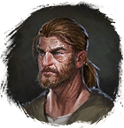

Топорик для секвойи
Предметы / Ресурсы
Открыть в интерактивной вики →
| Вес | 1 |
|---|---|
| Цена | 0 |
Описание
Можно бесплатно получить у
Требуются для получения Балка секвойи, а также фарма
Балка секвойи, а также фарма  Клещ.
Клещ.

Маттей в Беирне.Требуются для получения
Балка секвойи, а также фарма Клещ.| - |
Применение
|
Способы получения
|